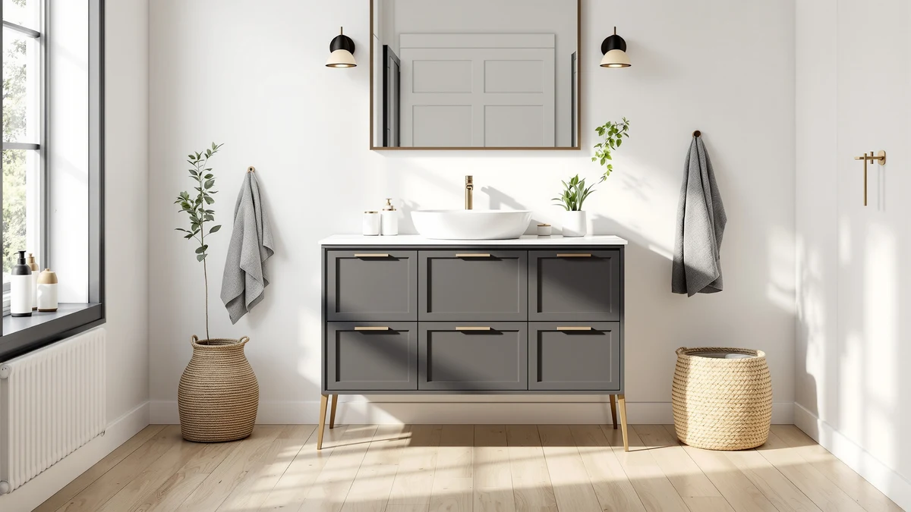

eclife 42" Bathroom Vanities Review (2026): Worth It?
Prices and picks verified as of November 2026. Independent, reader-supported reviews.


Quick Answer
In this eclife 42" bathroom vanities review, the eclife 42" Bathroom Vanities Sink costs $499.99 and pairs a single sink with an MDF and engineered-wood cabinet. It costs about the same as all three alternatives below, so the real decision comes down to footprint size rather than price.
Our pick: eclife 42" Bathroom Vanities Sink, $499.99 Check Price on Amazon
Bottom line: our top pick is the eclife 42" Bathroom Vanities Sink Combo with Painted Surface at $499.99.
Things to Know Before You Buy
- Size first, style second. A 42 inch cabinet lands between the common 36 inch and 48 inch sizes, so measure your wall space before comparing options in this eclife 42 inch vanity review.
- MDF and engineered wood need a dry bathroom. Keep the cabinet sealed and wipe up standing water around the sink base and faucet connections.
- Single sink means simpler plumbing: one drain and one water line instead of two, which matters if you're doing the install yourself.
- Published ratings are thin across this category. None of the four vanities compared here carry a public star rating or review count, so pricing and materials carry more weight than reviews.
- Price overlaps are common. All four vanities list within about $20 of each other, so size and finish should decide the purchase, not cost.
This eclife 42" bathroom vanities review looks at where a single-sink, 42 inch cabinet lands among a small cluster of vanities that price within $20 of each other. A 42 inch width splits the gap between the common 36 inch and 48 inch sizes, which makes it a practical swap for a small bathroom that already has a vanity in that range. Shoppers comparing it against wider options like the AMERLIFE or SOLIDEE below usually already know how much wall space they have to work with.
The short version: the eclife costs about the same as the AMERLIFE 60 inch and SOLIDEE 48 inch alternatives, but its narrower single-sink footprint fits bathrooms neither of those can. It loses points on track record, since the Amazon listing hasn't collected a public rating yet. We walk through the materials, the size tradeoffs, and where each alternative fits better in the sections below, so you can match the choice to your own bathroom instead of guessing from a photo.
Why You Should Trust Us
Ilane Tall covers bathroom vanities and fixtures for Best Bathroom Vanities and put together this eclife 42" bathroom vanities review by comparing listed materials, current Amazon pricing, and verified owner feedback where it exists, rather than repeating manufacturer copy. We do not run a fake testing lab and don't claim to have installed any of the vanities covered here. Instead, we check dimensions, construction details, and pricing against what owners report after living with similar pieces, and we say plainly when a listing doesn't yet have enough review data to back a confident recommendation. You can check the same sources we used by opening any Amazon listing and scrolling to the ratings section yourself; when that section is empty, as it is for every vanity in this eclife 42" bathroom vanities review, you'll see the exact gap we're flagging.
Our Research Experience
This eclife 42" bathroom vanities review doesn't involve physical testing. We compared the eclife 42" Bathroom Vanities Sink against the three closest-priced alternatives using each listing's stated materials, dimensions, and construction details, then checked for verified owner reviews on every listing. None of the four currently carries a public rating or review count on Amazon, so this comparison rests on manufacturer specs and pricing rather than years of buyer feedback. When that happens, we note the gap directly instead of inventing a track record that doesn't exist, and we'll update this review if any of these listings pick up verified ratings later.
Overview & Specs

eclife 42" Bathroom Vanities Sink
What we like
- Single-sink, 42 inch footprint fits bathrooms too small for the 48 inch or 60 inch alternatives below
- MDF and engineered wood construction keeps the price near $500 instead of pushing past $700 for solid wood
- One drain and one water line make installation simpler than a double-sink swap
- Priced within $20 of every alternative in this comparison, so size and finish decide the purchase, not budget
Flaws but not dealbreakers
- MDF and engineered wood construction needs prompt cleanup of standing water, unlike solid hardwood
- No public rating or review count on the Amazon listing yet, so there's no verified owner track record to lean on
- 42 inches won't work for a double-sink layout, unlike the AMERLIFE 61 inch alternative below
| Material | MDF / engineered wood |
| Size | 42" Single |
The eclife 42" Bathroom Vanities Sink is the narrowest of the four options in this eclife 42" bathroom vanities review, and the only one built specifically as a single-sink cabinet at this width. The cabinet combines MDF and engineered wood, a build that keeps the price near $500 while still giving you real counter space on either side of the basin. At $499.99 it lands within $20 of every alternative here, but its narrower footprint fits bathrooms that the 48 inch SOLIDEE and 60 inch AMERLIFE can't match.
Review history is the eclife's weak spot, the same gap that shows up across all three alternatives in this comparison. Amazon shows no rating or review count on this listing, so you're evaluating it on stated materials and size rather than years of buyer feedback the way a more established listing would allow. MDF and engineered wood construction also asks for more care around the sink basin than solid wood, since the core swells faster if water sits on the surface. If your bathroom can spare more than 42 inches, or you'd rather buy from a listing with a proven review history, the alternatives below are worth comparing before you commit.
What We Liked
Across this eclife 42" bathroom vanities review, the eclife's size stands out most. A 42 inch single-sink cabinet is harder to find at this price than a 36 inch or 48 inch one, since most budget vanities cluster at those two more common sizes. The single-sink layout also keeps plumbing simple: one supply line, one drain, and one P-trap instead of the two of each a double-sink cabinet needs. Matching the price of wider competitors while asking for less wall space is a straightforward win for anyone whose bathroom can't fit a 48 inch or 60 inch cabinet.
What Could Be Better
The biggest gap is review history. Because the listing hasn't accumulated a public rating, you can't lean on owner comments the way you could with an established vanity, so part of the decision rests on trusting the stated materials. MDF and engineered wood construction, even when well-made, also asks for more care around standing water than solid wood, which matters in a bathroom that sees daily use. Buyers who want a double-sink layout won't find it here, since 42 inches only supports a single basin. Measure your own bathroom carefully before buying, since a cabinet this size can still crowd a door swing or a toilet rough-in in a tighter room.
Who Is It For?
This single-sink vanity suits a small-to-midsize bathroom with roughly 42 inches of wall space and a preference for a straightforward, budget-friendly cabinet over a wider farmhouse piece. It fits buyers replacing an existing 36 to 48 inch vanity who want to avoid reworking the plumbing rough-in. It's a weaker fit for anyone who wants an established review history before buying, for a household that needs a double-sink layout, or for a bathroom with enough space to justify the extra counter area the AMERLIFE or SOLIDEE options below provide.
Alternatives to Consider
If the eclife doesn't fit your bathroom's width or you need two sinks instead of one, these three alternatives from this eclife 42" bathroom vanities comparison cover the rest of the price range: a 60 inch AMERLIFE farmhouse vanity and a 48 inch SOLIDEE vanity at nearly the same price, and a 61 inch AMERLIFE double-sink vanity for shared bathrooms.

Editor’s Pick
AMERLIFE 60” Farmhouse Bathroom Vanity
At $499.99, the same price as the eclife, the AMERLIFE 60-inch farmhouse vanity trades the eclife's compact single-sink footprint for 18 extra inches of counter and cabinet space. It still ships as a single-sink unit despite the wider body, so plumbing stays as simple as the eclife's while storage and counter room both grow. The farmhouse styling gives it a heavier, more rustic look than the eclife's plainer cabinet front, so the choice between the two often comes down to design as much as floor space. If your bathroom can fit a 60-inch footprint and you want a farmhouse look, this is the stronger pick in this eclife 42-inch vanity comparison.
$499.99
Check Price on Amazon
Best Value
SOLIDEE 48 inch Natural Color
The SOLIDEE 48-inch vanity lands between the eclife and the AMERLIFE in size, priced at $499.90, almost identical to the eclife's $499.99. Its natural wood-tone finish reads lighter than the eclife's cabinet front, which matters if your bathroom leans toward a brighter, more modern look rather than a dark farmhouse finish. At 48 inches it still clears most single-sink rough-ins without jumping all the way to the AMERLIFE's 60-inch footprint, making it the middle option in this eclife 42-inch vanity comparison for buyers who want more counter space than the eclife without committing to the largest cabinet here.
$499.90
Check Price on Amazon
Premium Choice
AMERLIFE 61" Farmhouse Double Bathroom
The AMERLIFE 61-inch vanity is the only double-sink option in this comparison, priced slightly lower at $489.99 than the eclife's $499.99. It's the clear choice for a shared primary bathroom where two people need separate sinks and separate counter space at the same time, something none of the single-sink options here, including the eclife, can offer. The farmhouse double-sink layout needs two supply lines and two drains instead of one, so budget more installation time than the single-sink eclife requires. If your household has outgrown a single sink, this is the pick worth comparing against the eclife 42-inch vanity before you buy.
$489.99
Check Price on AmazonIs the eclife 42" Bathroom Vanities Sink good for a small bathroom?
A 42 inch single-sink cabinet works well in small-to-midsize bathrooms where a 48 inch or 60 inch vanity would crowd the door swing or a nearby toilet.
What is the eclife 42" vanity cabinet made of, and does that matter in a bathroom?
The cabinet is built from MDF and engineered wood rather than solid hardwood, which keeps the price near $500.
Frequently Asked Questions
Is the eclife 42" Bathroom Vanities Sink good for a small bathroom?
A 42 inch single-sink cabinet works well in small-to-midsize bathrooms where a 48 inch or 60 inch vanity would crowd the door swing or a nearby toilet. If your bathroom is smaller than that, check the listing's exact cabinet depth before buying, since even a few extra inches matter in a tight layout.
What is the eclife 42" vanity cabinet made of, and does that matter in a bathroom?
The cabinet is built from MDF and engineered wood rather than solid hardwood, which keeps the price near $500. That construction handles normal bathroom humidity fine, but it swells faster than solid wood if standing water sits around the sink base or faucet holes, so wipe up spills promptly.
Is the eclife 42" bathroom vanities review pick worth it compared to the AMERLIFE and SOLIDEE alternatives?
All four vanities in this comparison list within about $20 of each other, so price alone doesn't settle it. Pick the eclife if you need a single-sink, 42 inch footprint, and pick the AMERLIFE or SOLIDEE if your bathroom can fit a 48 inch or 60 inch cabinet instead.
Final Verdict
This eclife 42" bathroom vanities review comes down to size, not price, since all four vanities land within about $20 of each other. The eclife 42" Bathroom Vanities Sink is the pick for a small-to-midsize bathroom with roughly 42 inches of wall space, since it covers that single-sink footprint without the installation changes a wider cabinet would require. If your bathroom is wider, the AMERLIFE 60 inch or SOLIDEE 48 inch alternatives cover those cases without straying outside the same $489.99 to $499.99 range, and the AMERLIFE 61 inch double-sink vanity covers households that need two basins. Whichever you choose, confirm the current Amazon price and stock before ordering, since none of these four listings has a public rating to fall back on yet.